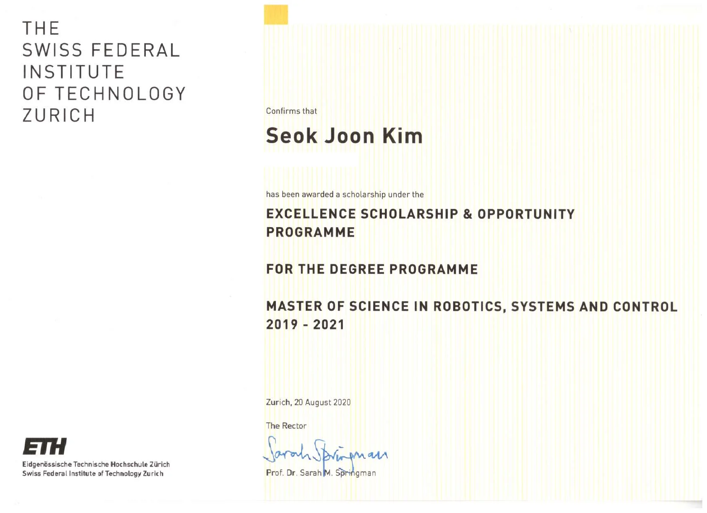
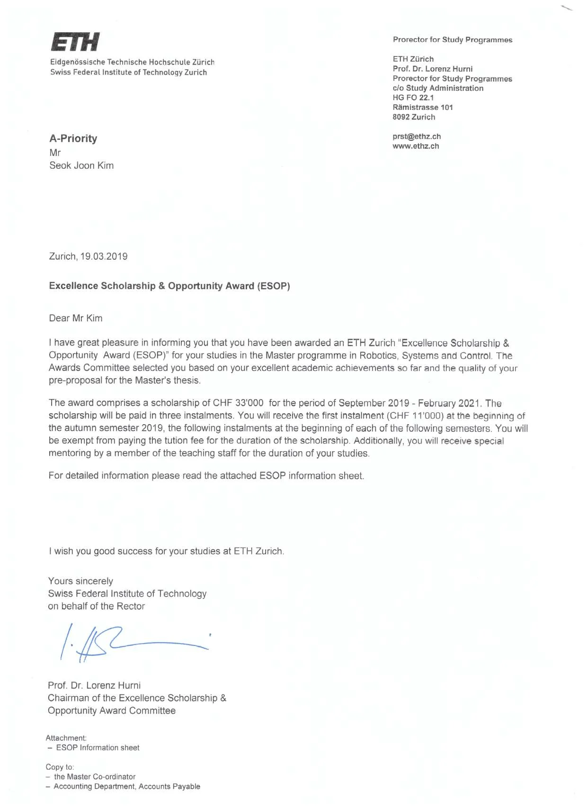

Excellence scholarship
Excellence Scholarship & Opportunity Programme
I was one of 51 incoming master’s students across ETH Zürich selected for the Excellence Scholarship, which fully funded my MSc in Robotics, Systems and Control for the full duration of the programme.
The Awards Committee selected me on the basis of my academic record and the quality of my pre-proposal for the Master’s thesis. The award comprised CHF 33,000 for living costs over three semesters (September 2019 – February 2021), a full tuition-fee waiver, and personal mentoring by a member of the teaching staff. The scholarship is funded entirely through private donations from more than 3,700 ETH alumni, foundations, and companies via the ETH Foundation, which also connects scholars with a community of over 400 current and former Excellence Scholars.

